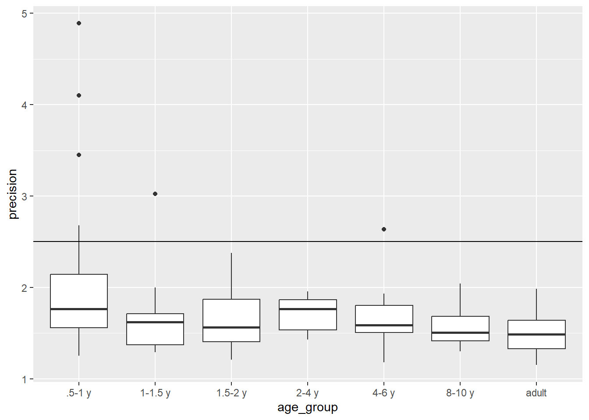
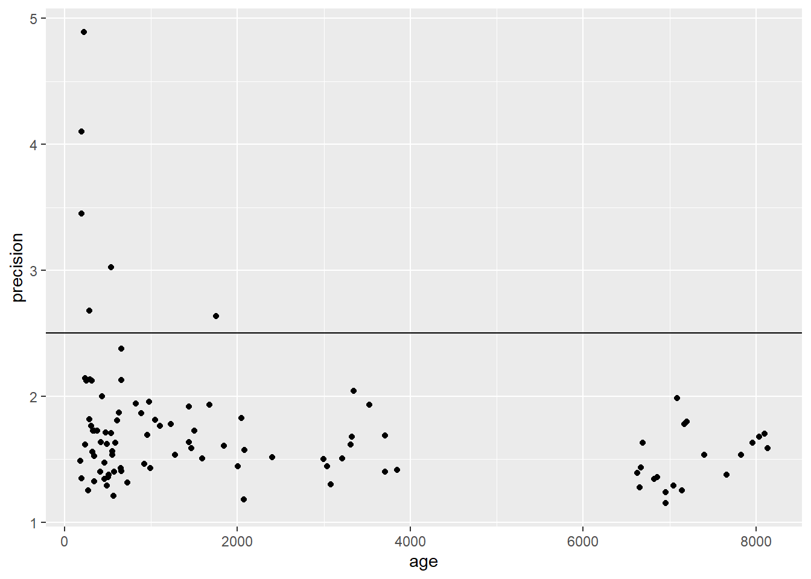

This project has two raw data files at different scales from a study of infants, children, and adults watching a series of 7 video clips. I wrote Steps 1 and 2 to import and merge the data, and kept them here for your reference. Skip down to Step 3 to work on EDA
AUC_sal (area-under-the-curve for a saliency model)
AUC_dist (area-under-the-curve for a distance model)
AUC values indicate how well each model predicted where participants looked when watching a video AUC values can range from 0-1 where .5 is chance and 1 is perfect prediction.
File 2: participants_info_full_headers.csv
Columns:
id (unique participant identifier, matches auc.csv)
age_group (a categorical age variable with levels:
“.5-1 y” “1-1.5 y” “1.5-2 y” “2-4 y” “4-6 y” “8-10 y” “adult”
Precision (a quality measure of the eye data, smaller is better)
7 columns of “Seen X” the stimulus video before the study coded as
SEEN (1), NOT SEEN (2), NOT SURE (3)
Rows: 575 Columns: 5
── Column specification ────────────────────────────────────────────────────────
Delimiter: ","
dbl (5): stim, id, age, AUC_sal, AUC_dist
ℹ Use `spec()` to retrieve the full column specification for this data.
ℹ Specify the column types or set `show_col_types = FALSE` to quiet this message.
Wrangle the ppt info data so that you can merge it into the auc data. Drop any data where the AUC values are missing. In the final, merged data, make the “watched” variable is coded as a factor with # levels “seen” (1), “not seen” (2), “not sure” (3). Write the cleaned file to data_cleaned/
Read in the ppt data and rename columns to be easier to work with.
Rows: 115 Columns: 10
── Column specification ────────────────────────────────────────────────────────
Delimiter: ","
chr (1): Age group
dbl (9): participant ID, Precision, Seen Feist, Seen Plane, Seen Fallon, See...
ℹ Use `spec()` to retrieve the full column specification for this data.
ℹ Specify the column types or set `show_col_types = FALSE` to quiet this message.
Each question about watching each video is a column, so pivot_longer. Use separate to get just the video name into it’s own column
Is the precision acceptable (< 2.5) for each participant? Visualize the distribution of precision to see if there are values above 2.5.
Create a summary to figure out which participants would we need to exclude if > 2.5 meant the data are unuseable? Use a summary table and plots to investigate whether data equally precise for participants of different ages
Visualize the distribution of precision to see if there are values above 2.5
`summarise()` has grouped output by 'id'. You can override using the `.groups`
argument.
# A tibble: 6 × 3
# Groups: id [6]
id age_group precision
<dbl> <chr> <dbl>
1 52 1-1.5 y 3.02
2 78 .5-1 y 3.45
3 79 .5-1 y 4.89
4 81 .5-1 y 2.68
5 84 4-6 y 2.64
6 108 .5-1 y 4.1
ds %>%filter(precision >2.5)
# A tibble: 25 × 8
stim id age AUC_sal AUC_dist age_group precision watched
<fct> <dbl> <dbl> <dbl> <dbl> <chr> <dbl> <fct>
1 Feist 52 539 0.547 0.507 1-1.5 y 3.02 No
2 Science 52 539 0.447 0.356 1-1.5 y 3.02 No
3 Plane 52 539 0.498 0.484 1-1.5 y 3.02 No
4 Dogs 52 539 0.668 0.470 1-1.5 y 3.02 No
5 Feist 78 198 0.507 0.449 .5-1 y 3.45 No
6 Pentatonix 78 198 0.577 0.580 .5-1 y 3.45 No
7 Science 78 198 0.755 0.821 .5-1 y 3.45 No
8 Plane 78 198 0.611 0.555 .5-1 y 3.45 No
9 Dogs 78 198 0.494 0.485 .5-1 y 3.45 No
10 Feist 79 226 0.600 0.597 .5-1 y 4.89 No
# ℹ 15 more rows
Use a summary table and plots to investigate whether data equally precise for participants of different ages
ds %>%group_by(age_group) %>%summarize(across(precision, list(M = mean, MIN = min, MAX = max)))
# A tibble: 7 × 4
age_group precision_M precision_MIN precision_MAX
<chr> <dbl> <dbl> <dbl>
1 .5-1 y 2.11 1.25 4.89
2 1-1.5 y 1.66 1.29 3.02
3 1.5-2 y 1.64 1.21 2.38
4 2-4 y 1.72 1.43 1.96
5 4-6 y 1.68 1.18 2.64
6 8-10 y 1.59 1.3 2.04
7 adult 1.50 1.15 1.99
ds %>%ggplot(aes(x = age_group, y = precision)) +geom_boxplot() +geom_hline(yintercept =2.5)

ds %>%ggplot(aes(x = age, y = precision)) +geom_point() +geom_hline(yintercept =2.5)

3B AGE
Convert age to years so that it can be more easily compared to age_group #Visualize age in years by age_group to see whether participants are the correct age for their group. Make a summary table of age in years by age group to check whether all participants’ ages are correct.
Convert age to years so that it can be more easily compared to age_group.
ds <- ds %>%mutate(age_years = age/365.25)
Visualize age in years by age_group to see whether participants are the correct age for their group